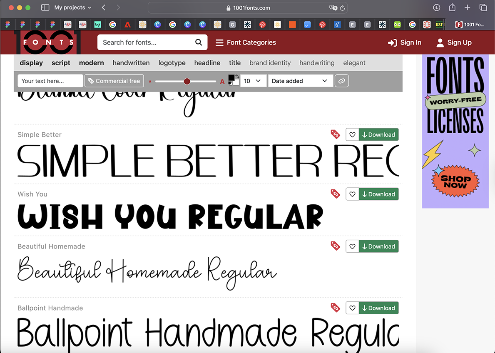
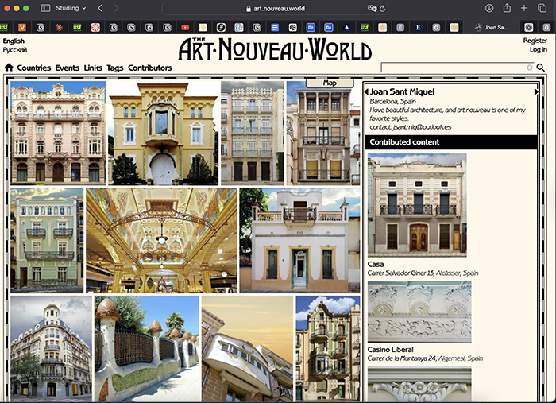

Obviously, I can’t deny that I spend a good amount of time on social media, scrolling through feeds and keeping up with what’s happening around me. But the internet is much more than just entertainment for me—it’s something I use constantly as a tool for learning and exploring. Whenever a question pops into my head, whether it’s big or small, I go online to search for answers. Sometimes that means Googling quick facts, other times it’s diving into articles, videos, or discussions to understand a subject better. I also rely a lot on ChatGPT to explain things, help me brainstorm, or guide me through topics I’m curious about. In a way, the internet has become my main resource for both knowledge and inspiration, not just for passing time.

